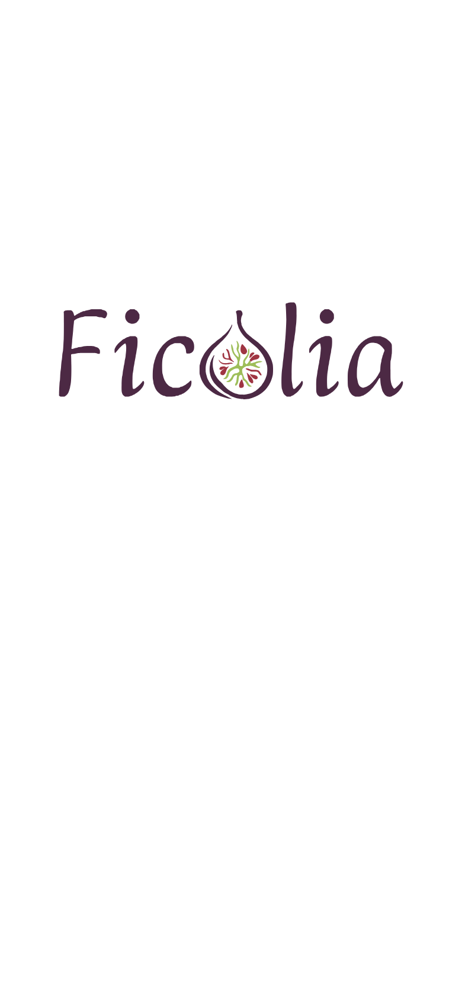
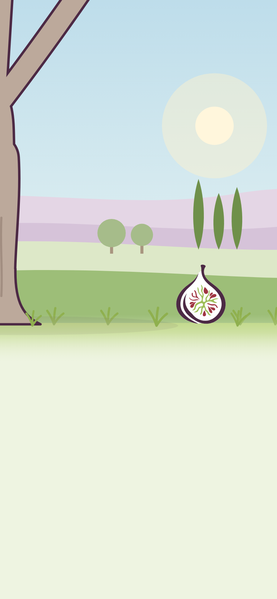
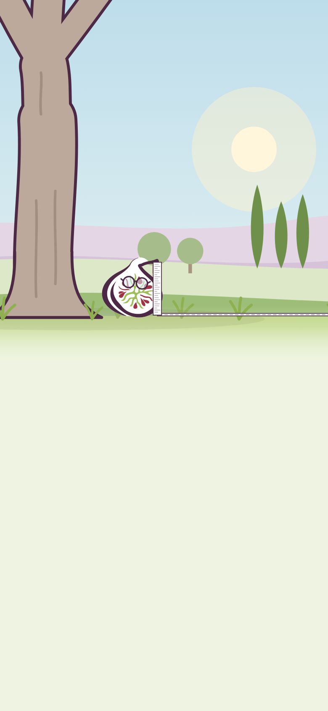

Ficolia
Continuer à prendre soin de soi,
sans vérifier ses flacons dix fois.
Texte provisoire[L’objectif de Ficolia, en une phrase : à écrire]
Ce n’est pas un avis médical. Pour toute question de santé, adressez-vous à un professionnel de santé.
Titre : proposition · objectif : à écrire · rappel : texte du prototypePour utiliser Ficolia, il faut en accepter les conditions d’utilisation.
[Limites essentielles, en mots simples — en attente de la juriste]
Conditions d'utilisation — version du [date]
Textes provisoires